Project 3-2: Additional Features to PathTracer
CS 184: Computer Graphics and Imaging, Spring 2023
Overview
In this project, we added features to support the rendering of more materials based on project 3-1. Specifically, our implementation can now support the rendering of the following materials: mirror, glass, and metals. For mirror, we used perfect specular reflection; for glass, we used refraction; for metal, we used the microfacet model.
The implementation of this project is conceptually easy but the computation aspect is a little complicated and requires a great understanding of each of the formulas we need to use during the implementation. Overall, this project is extremely rewarding as the rendering results are much closer to reality compared to the other half of the project.
Part 1: Mirror and Glass Materials
Below we rendered the CBspheres.dae with 64 samples per pixel, 4 samples per light, and different levels of max_ray_depth.
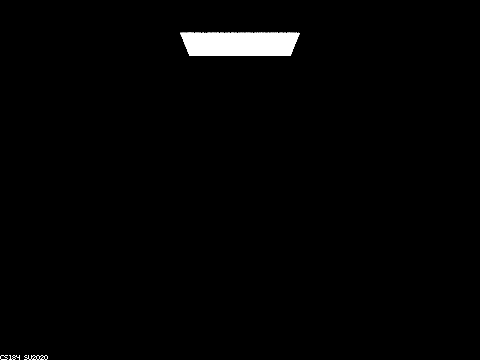
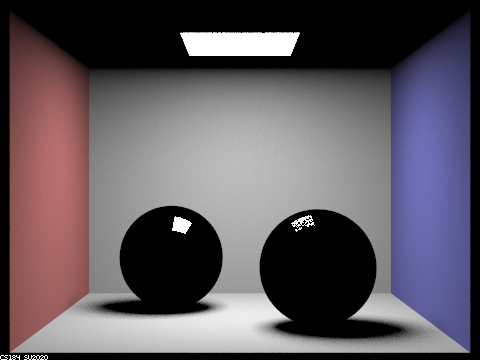
When max_ray_depth = 0, only the light source will be visible since lighting up other parts requires at least one bounce.
When max_ray_depth = 1, we see only see direct lighting. The two spheres are mostly dark except in the small areas where the reflection of the light source took place.
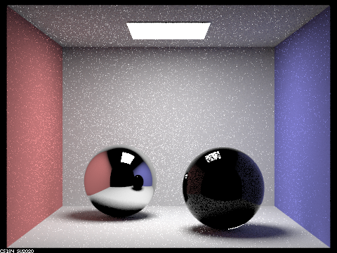
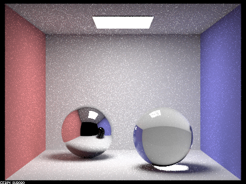
When max_ray_depth = 2, we can clearly observe the mirror sphere because it took two bounces for the light to hit the sphere and hit the box.
When max_ray_depth = 3, we can clearly observe the glass sphere as well because it took three bounces for the light to enter the sphere, exit the sphere, and hit the box.
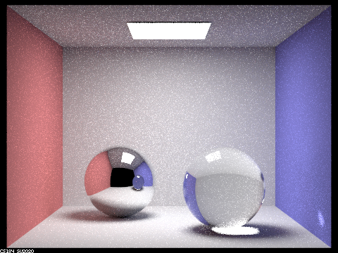
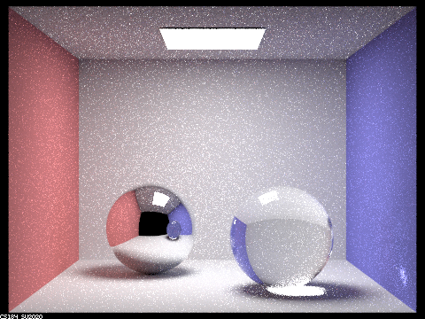
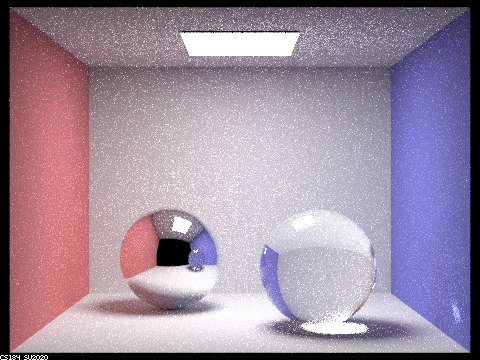
For max_ray_depth = 4/5, the only noticeable difference is the glass sphere got more noise in it and this is because as more bounces occur, the glass sphere’s noise level will get closer and closer to its surrounding noise level.
When max_ray_depth = 100, everything has converged, and there’s no noticeable difference.
Part 2
Varying Alpha
Here we render CBdragon_microfacet_au.dae with \(\alpha\) set to 0.005, 0.05, 0.25, and 0.5. For each, we take 256 samples per pixel, 4 samples per light, and maintain a ray depth of 7.
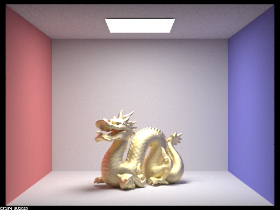
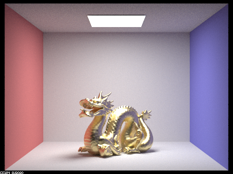
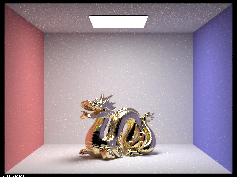
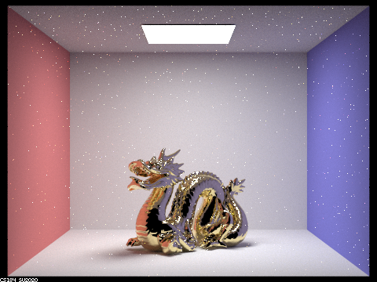
We can observe that as \(\alpha\) decreases, the material becomes “shinier” (or glossier/specular) and becomes more reflective of its surroundings. At \(\alpha = 0.5\), we faintly see the influence of the red wall on the throat of the dragon (and likewise we faintly see the blue influence on its tail), but it is otherwise a matte golden. At \(\alpha = 0.25\), these influences become more apparent, and by \(\alpha = 0.05\), it is reflective to the point of being comparable to a mirror. We also note that at this point there exists a side effect of many white points across the image. These are most severe at \(\alpha = 0.005\).
Comparison with Cosine Hemisphere Sampling
Here we compare our implementation of Importance Sampling with the provided implementation of Cosine Hemisphere Sampling. For each, we take 64 samples per pixel, 1 sample per light, and maintain a ray depth of 7.
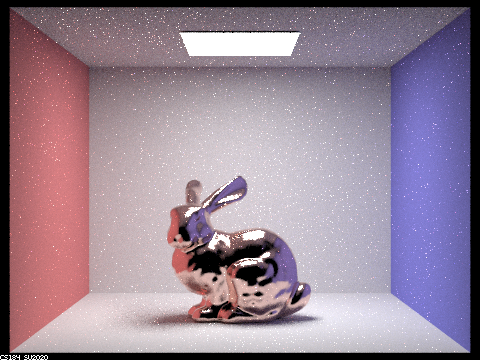
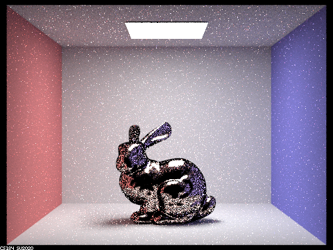
We can observe that the room itself is quite similar in both images as the walls and floor both converge quickly. However, in the details of the bunny we see that the details in Cosine Hemisphere Sampling are poorly approximated, with many excessively dark regions (e.g., the further ear) and an abundance of blackpoints throughout the body.
Additional Materials
Here we present CBdragon_microfacet_au.dae with alternate materials, obtained by modifying the \(\eta\) and \(k\) values in the file. These values were obtained from the following site: https://refractiveindex.info. For each rendering, we take 256 samples per pixel, 4 samples per light, and maintain a ray depth of 7.
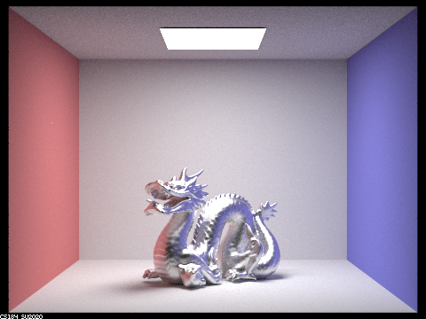
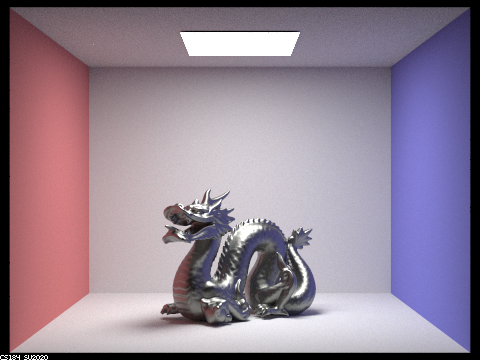
Note the the first, Zinc, is a conductor material, while the latter is a sulfosalt which we tried for fun.